JavaScript es el lenguaje de programación más popular del mundo.
JavaScript es el lenguaje de programación de la Web.
JavaScript es fácil de aprender.
Este tutorial le enseñará JavaScript básico.

JavaScript es uno de los 3 lenguajes que todos los desarrolladores web deben aprender:
Existen dos formas diferentes de agregar javascript
Esta es la mejor opcion si queremos tener un codigo mas legible ,Sobre todo porque algunos scripts de JS deben utilizarse en varias páginas, por lo tanto, es mejor mantener el código JavaScript en archivos separados.Es por esto que la forma más aceptable de incluir JavaScript en HTML es importando archivos externos. Se puede hacer referencia a estos archivos desde adentro de los documentos HTML.al igual que hacemos referencia a los documentos CSS. Algunos de los beneficios de agregar código JS en archivos separados son:
Para el ejemplo vemos agregamos en la linea 9 la etiqueta para hacer uso de un archivo llamado funciones.js que se encuentra dentro de una carpeta llamada js dentro de nuestro proyecto

forma de insertar JavaScript en HTML es directa. Puedes hacerlo utilizando la etiqueta < script > </script > que debe envolver todo el código JS que escribas. Se puede agregar el código JS, tanto en las etiquetas < head > o tambien al final del < body > se recomienda siempre que este al final del body para que la pagina cargue mas rapido y luego ejeucte el codigo javascript.

Las declaraciones de JavaScript a menudo comienzan con una palabra clave para identificar la acción de JavaScript que se debe realizar.
| # | Palabra clave | descripción |
|---|---|---|
| 1 | var | Declara una variable |
| 2 | let | Declara una variable de bloque |
| 3 | const | Declara una constante de bloque |
| 4 | if | Marca un bloque de declaraciones que se ejecutarán con una condición. |
| 5 | switch | Marca un bloque de sentencias que se ejecutarán en diferentes casos. |
| 6 | for | Marca un bloque de sentencias que se ejecutarán en un bucle. |
| 7 | function | Declara una función |
| 8 | return | Sale de una función |
| 9 | try | Implementa el manejo de errores en un bloque de declaraciones. |
Los comentarios de JavaScript se pueden utilizar para explicar el código JavaScript y hacerlo más legible. Los comentarios de JavaScript también se pueden utilizar para evitar la ejecución, al probar código alternativo
Los comentarios de una sola línea comienzan con //. Cualquier texto entre //y el final de la línea será ignorado por JavaScript (no se ejecutará). Este ejemplo utiliza un comentario de una sola línea antes de cada línea de código:

Los comentarios de varias líneas comienzan con /*y terminan con */. JavaScript ignorará cualquier texto entre /*y */. Este ejemplo utiliza un comentario de varias líneas (un bloque de comentarios) para explicar el código:

Utilice la ifdeclaración para especificar un bloque de código JavaScript que se ejecutará si una condición es verdadera.
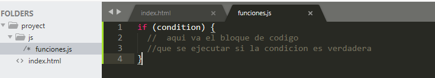Utilice la else declaración para especificar un bloque de código que se ejecutará si la condición es falsa.
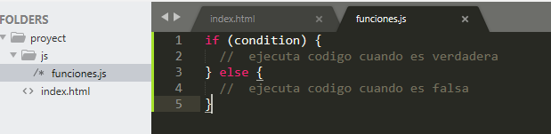Ejemplo Si el tiempo es inferior a las 10:00, cree un saludo de "Buenos días", si no es así, pero el tiempo es inferior a las 20:00, cree un saludo de "Buen día", de lo contrario un "Buenas noches":
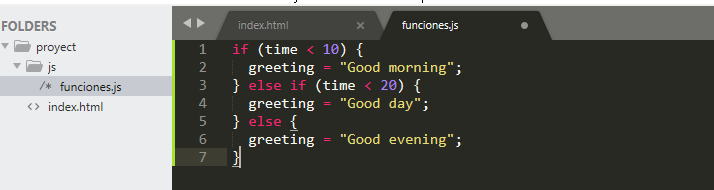Utilice la switch instrucción para seleccionar uno de los muchos bloques de código que se ejecutarán Así es como funciona: La expresión de cambio se evalúa una vez. El valor de la expresión se compara con los valores de cada caso. Si hay una coincidencia, se ejecuta el bloque de código asociado. Si no hay coincidencia, se ejecuta el bloque de código predeterminado.
El getDay()método devuelve el día de la semana como un número entre 0 y 6. Si hoy no es sábado (6) ni domingo (0), escriba un mensaje predeterminado:
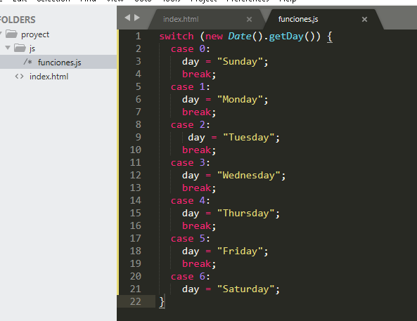Los bucles pueden ejecutar un bloque de código varias veces
Escribimos un codigo mas resumido con el bucle for en el siguiente ejemplo
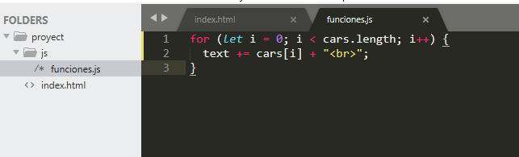
El while bucle recorre un bloque de código siempre que se cumpla una condición especificada.
Sintaxis.
En el siguiente ejemplo, el código del ciclo se ejecutará una y otra vez, siempre que una variable (i) sea menor que 10:
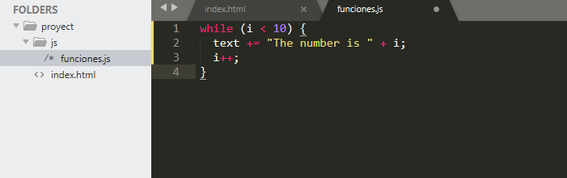El do while bucle es una variante del bucle while. Este bucle ejecutará el bloque de código una vez, antes de verificar si la condición es verdadera, luego repetirá el bucle siempre que la condición sea verdadera.
Sintaxis

El siguiente ejemplo usa un do whilebucle. El ciclo siempre se ejecutará al menos una vez, incluso si la condición es falsa, porque el bloque de código se ejecuta antes de que se pruebe la condición:
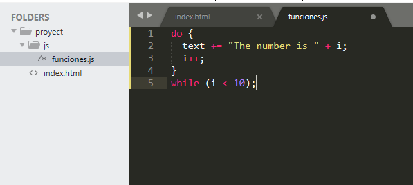
Las matrices de JavaScript se utilizan para almacenar varios valores en una sola variable.
Si tiene una lista de elementos (una lista de nombres de automóviles, por ejemplo), almacenar los automóviles en variables individuales podría verse así:
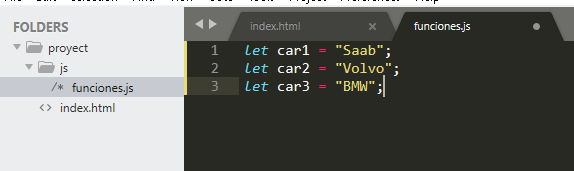Sin embargo, ¿qué pasa si desea recorrer los autos y encontrar uno
específico? ¿Y si no tuvieras 3 coches, sino 300?
¡La solución es una matriz!
Una matriz puede contener muchos valores con un solo nombre y puede
acceder a los valores haciendo referencia a un número de índice.
También puede crear una matriz y luego proporcionar los elementos:
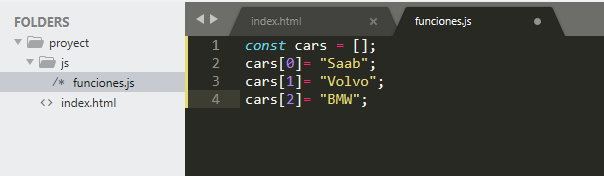Tambien se puede usar la palabra reservada new
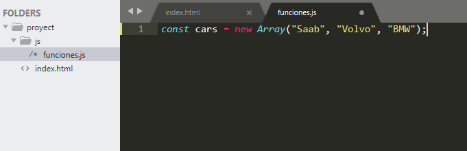La forma más segura de recorrer una matriz es usar un forbucle:
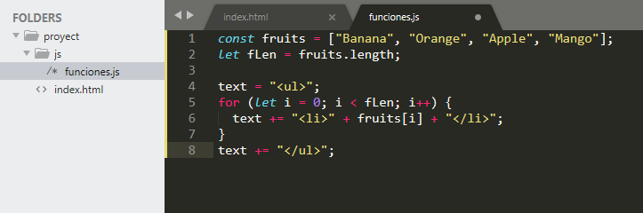que es un Json
El formato JSON es sintácticamente similar al código para crear objetos JavaScript. Debido a esto, un programa JavaScript puede convertir fácilmente datos JSON en objetos JavaScript.
Dado que el formato es solo de texto, los datos JSON se pueden enviar fácilmente entre computadoras y ser utilizados por cualquier lenguaje de programación.
JavaScript tiene una función incorporada para convertir cadenas JSON en objetos JavaScript:
JSON.parse()
JavaScript también tiene una función incorporada para convertir un objeto en una cadena JSON:
JSON.stringify()
Puede recibir texto puro de un servidor y utilizarlo como un objeto JavaScript.
Puede enviar un objeto JavaScript a un servidor en formato de texto puro.
Puede trabajar con datos como objetos JavaScript, sin complicados análisis ni traducciones.
Las funciones de JavaScript se definen con la functionpalabra clave. Puede utilizar una declaración de función o una expresión de función .
Anteriormente en este tutorial, aprendió que las funciones se declaran con la siguiente sintaxis:
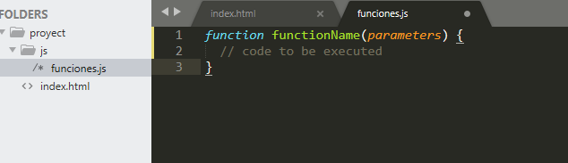Las funciones declaradas no se ejecutan inmediatamente. Se "guardan para su uso posterior" y se ejecutarán más tarde, cuando se invoquen (invoquen).
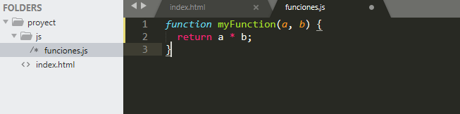También se puede definir una función de JavaScript mediante una expresión .
Una expresión de función se puede almacenar en una variable:
Después de que una expresión de función se haya almacenado en una variable, la variable se puede usar como función:
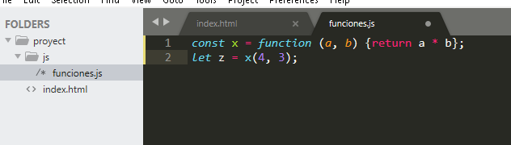La función anterior es en realidad una función anónima (una función sin nombre).
Las funciones almacenadas en variables no necesitan nombres de función. Siempre se invocan (llaman)
utilizando el nombre de la variable.
Con el modelo de objetos, JavaScript obtiene todo el poder que necesita para crear HTML dinámico: